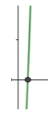

Zeros de Funções
Neste capítulo trataremos de métodos para resolver equações. E como toda equação pode ser escrita por
\[f(x)=0\]
este assunto também é dito Zeros de Funções. Trataremos aqui de métodos que resolve equações que satisfazem algumas poucas condições. Mas essa restrição não invalida o esforço do estudo pois é grande a variedade de equações que podem ser resolvidos pelos métodos apresentados. Começamos definindo o zero de uma função.
- Zero/Raíz
-
Seja \(f\) uma função e \(r\in Dom(f)\) um elemento no domínio de \(f\). Este é dito um zero ou raíz da função se e somente se \[f(r)=0.\]
Alguns exemplos de zeros de funções podemos ver na tabela abaixo.
| função | zero |
|---|---|
| \(f_1(x)=x^2-5x+3\) | 0,6972243623 |
| \(f_2(x)=-x^3-4x+3\) | 0,6735930582 |
| \(f_3(x)=\sqrt{x}-5e^{-x}\) | 1,43044508899 |
| \(f_4(x)=e^x+x\) | -0,56714329040 |
| \(f_5(x)=x lnx-1\) | 1,76322283304 |
A função quadrática \(f_{1}(x)\) pode ser resolvida pela fórmula de Bháskara \[x=\frac{-b\pm \sqrt{b^2-4ac}}{2a}\]
que fornece a resposta diretamente. A função cúbica \(f_{2}(x)\) pode ser resolvida pela fórmula de Tartáglia, mas as demais funções dessa lista não possuem fórmula alguma. Então como calcular os raízes delas ? Até funções polinômiais de ordem maior que 4 não há fórmulas de resolução. Dessa forma como se podemos resolver uma equação como \[x^5+2x^2-x=0 ?\]
Neste capítulo, vamos aprender a resolver essa e outras equações que não possuem fórmulas prontas de resolução.
Os métodos que aprenderemos aqui são chamados de Métodos Iterativos. Isso por conta das iterações ou rodadas que fazemos para melhorar (ou refinar) cada vez mais a raíz da equação. Raíz de uma equação é a solução do problema em questão.
Diferentemente do Método Direto ou Analítico que usa uma fórmula como a de Bháskara para resolver uma equação de 2º grau. Essa fórmula nos fornece as raízes diretamente.
Métodos Iterativos são úteis para resolver equações que não possuem fórmulas de resolução. E elas são, na verdade, a maioria. Para determinar a raiz da equação pelo método iterativo existem algumas etapas que devemos percorrer, a saber :
Definir a precisão de conta.
Dar um chute inicial.
Escolher um Método de Refinamento.
Escolher um ou mais Critérios de Parada.
Executar o processo até satisfazer todos os critérios de Parada adotados.
As quatro primeiras etapas normalmente são fornecidas no enunciado da questão, embora isso não seja uma regra. Já a quinta etapa é a parte que o aluno precisa fazer. É nesta etapa que o aluno será avaliado.
Precisão
A precisão da conta é para definir a proximidade em relação à raiz. Suponhamos que a raiz seja \(r=3,135104\). Consideremos os seguintes números
\[\left\{\begin{matrix} a_1 = 3,135199\\ a_2 = 3,135098 \end{matrix}\right.\]
cujas diferenças em módulo em relação a r são, respectivamente
\[\begin{array}{c}|a_{1}-r|=0,000095<10^{-4}\\|a_{2}-r|=0,000006<10^{-5}\end{array}.\]
Dizemos que a precisão de \(a_{1}\) é de \(\varepsilon=10^{-4}\) e a de \(a_{2}\) é de \(\varepsilon=10^{-5}\), portanto \(a_{2}\) é mais próxima à raiz e por isso é um resultado melhor. Entretanto, não confunda a precisão com o número de casas decimais corretas. Observe que \(a_{1}\) tem as primeiras 4 casas decimais corretas ao passo que \(a_{2}\) apenas 3, embora seja um resultado melhor
\[\begin{array}{c}a_{1}=3,\underline{1351}99\\a_{2}=3,\underline{135}098\end{array}.\]
Outra maneira de se referir à precisão é dizer que \(a_{1}\) tem precisão de 4 casas decimais e \(a_{2}\) tem a precisão de 5 casas decimais. Isso tem a ver com o número de zeros na diferença para o valor correto e não com o número de decimais corretas. Mas há casos em que o enunciado pede justamente isso: decimais corretas até a \(n\)-ésima casa. Por isso deve-se sempre prestar atenção no enunciado do problema! Quando se pede isso, o exemplo acima nos dá uma ideia do que fazer : aumentar a precisão em algumas casas decimais. Nesse exemplo vimos que \(a_{2}\) tem a precisão de 5 casas, pois, \(\varepsilon=10^{-5}\), mas acerta apenas as 3 primeiras casas decimais. Se o enunciado pedir 4 corretas, temos que trabalhar com uma precisão maior, talvez \(\varepsilon=10^{-6}\). Mas, dependendo do dígito da \(n\)-ésima casa, muitas vezes a precisão de \(n\) casas já é suficiente. Veja no exemplo acima onde \(a_{1}\) tem precisão de 4 casas e acertando as 4 decimais iniciais. Em geral, uma precisão de \(n+1\) casas já serve para acertar as \(n\) decimais iniciais. Mas isso nem sempre acontece. Quando há a presença de zeros no valor exato, por exemplo, pode dar problemas. Vejamos um exemplo. Suponhamos que o valor correto seja \[r=3,121002.\] Com a precisão de 5 casas e obtemos os seguintes resultados \[\begin{array}{c}a_{1}=3,\underline{12}0993\\a_{2}=3,\underline{1210}10\\a_{3}=3,\underline{12100}9\end{array}\] Verifique que todos têm a mesma precisão de \(\varepsilon=10^{-5}\) mas os números \(a_{1},a_{2},a_{3}\) acertam, respectivamente, duas, quatro e cinco casas decimais. Uma observação a fazer aqui é a seguinte: quando se pede n decimais corretas, não significa qualquer decimais mas sempre as primeiras decimais a partir da vírgula.
Chute Inicial
Caso o valor inicial não seja fornecido, você mesmo deve fazer esse chute. Depois, é só rodar o programa e veja se ele converge para algum ponto fixo. Esse ponto fixo será a raiz do problema. Um bom chute inicial faz o processo convergir para algum lugar. Esse lugar que falamos é um valor cujo processo modifica muito pouco os seus dígitos, talvez só na décima primeira casa decimal. Por isso o chamamos de ponto fixo.
Mas, como podemos saber se o chute inicial que fizemos foi bom ou não ? Essa é uma boa pergunta. Normalmente se você começar por um ponto mais ou menos próximo à raiz, será um bom chute. Mas pode acontecer que o chute não seja tão perto da raiz, mesmo assim converge para um ponto fixo. Então não se preocupe muito com isso. Basta você rodar o programa e ver se converge. Se não convergir, tente outro chute e recomece o processo.
Método de Refinamento
A segunda etapa é escolher um método de refinamento. Esse método por vezes também é uma exigência do professor/examinador. Mas quando não é fornecido ou não é exigido, você pode escolher qualquer um dos métodos ensinados e aprendidos.
Critérios de Parada
Neste texto vamos usar dois critérios de parada, um para cada variável. Por que isso ? Lembramos que estamos trabalhando com duas variáveis, \(x\) e \(y\), a segunda dependente da primeira, ou seja \(y=f(x)\). Dizemos que \(y\) é a imagem de \(x\) e que \(x\) é abscissa de \(y\). Também se diz de \(y\) como ordenada de \(x\) e \(x\) como pré-imagem de \(y\). Lembrando que, uma raiz de \(f\) é um valor \(x=r\) tal que \(y=f(r)=0\). Assim queremos achar um valor da variável \(x\) determinado pelo valor 0 da outra variável: \(y\). Quem pode-me garantir que um valor próximo à raiz tem imagem próxima de zero ? Veja por exemplo a função
\[f(x)=5000x^2-300\]
cuja raíz positiva é \(r=0,24495\). O valor \(a=0,244\) é bastante próxima à raiz com precisão de \(0,00095<\varepsilon=10^{-3}\) mas a imagem dele é longe de zero, pois \(f(a)=-2,32\) . Na verdade, qualquer função cujo gráfico é quase vertical na raiz vai dar esse problema.
